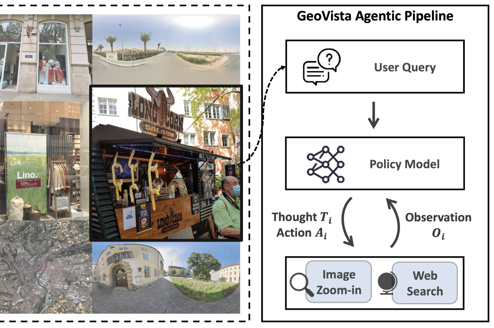
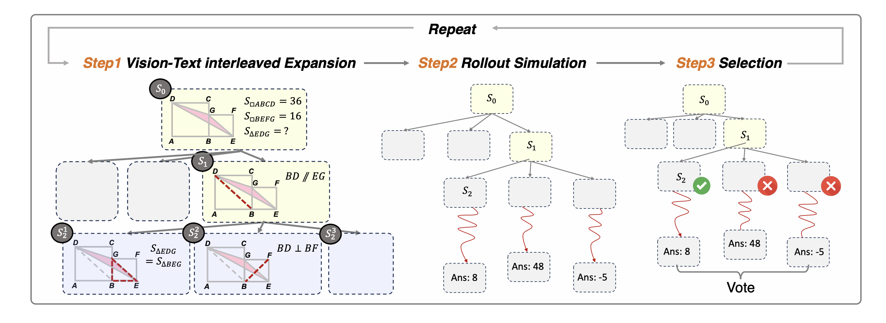
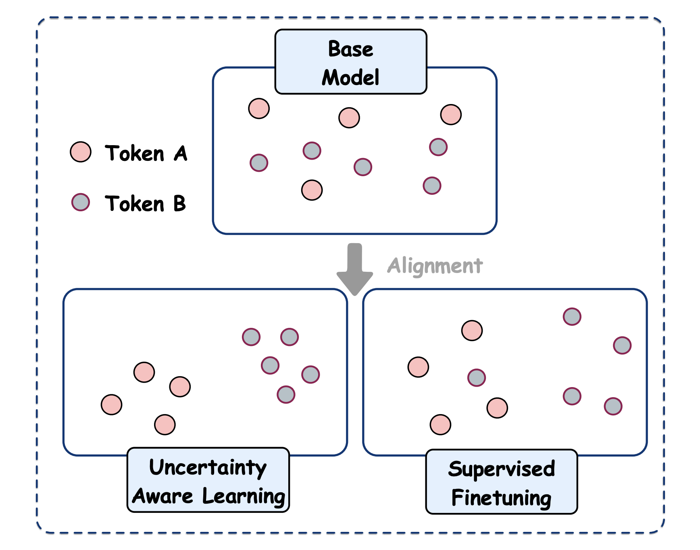
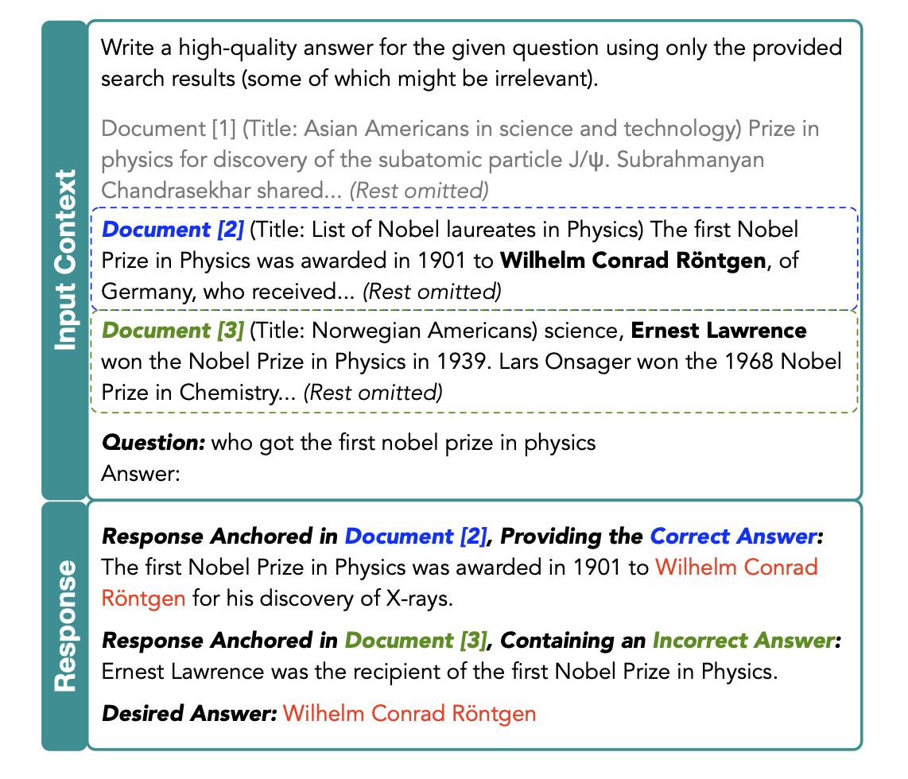
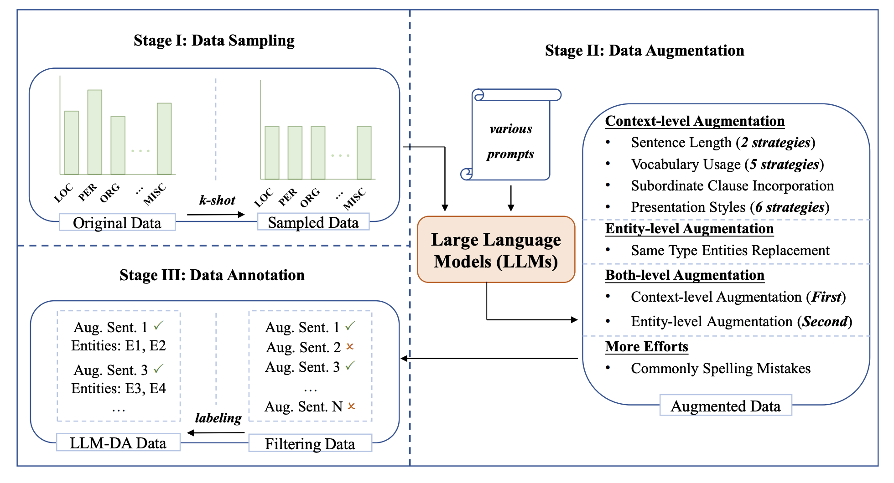

About Me [CV]
Hi, I am a second-year Ph.D. student in Fudan University & SII (Joint Program), currently supervised by Prof. Pengfei Liu. I received my B.S. in Computer Science from Fudan University. Previously, I worked with Qi Zhang, Fei Liu, and Jiaqi Wang.
My research centers on Multimodal Interactive Intelligence, with a particular focus on Multimodal LLMs and LLM agents. Please feel free to contact me for discussion and collaboration!
News
- Three papers were accepted to ACL 2026: GeometryZero, ASVR, and VideoPro.
- We released GeoVista, a web-augmented agentic visual reasoning framework for geolocalization.
- I joined Tencent Hunyuan as a research intern, working on frontier visual reasoning models.
- VisuoThink was accepted to ACL 2025 Main.
- Two papers were presented at ACL 2024.
Selected Publications [Google Scholar]
-
arXiv

ArXiv Technical Report -
ACL

-
ACL

-
ACL

-
arXiv

ArXiv Technical Report


Industry Experience
Tencent Hunyuan, Shanghai, China
Hunyuan Research Intern
Topic: Frontier visual reasoning model; supervised finetuning and reinforcement learning
Jul. 2025 ~ Dec. 2025